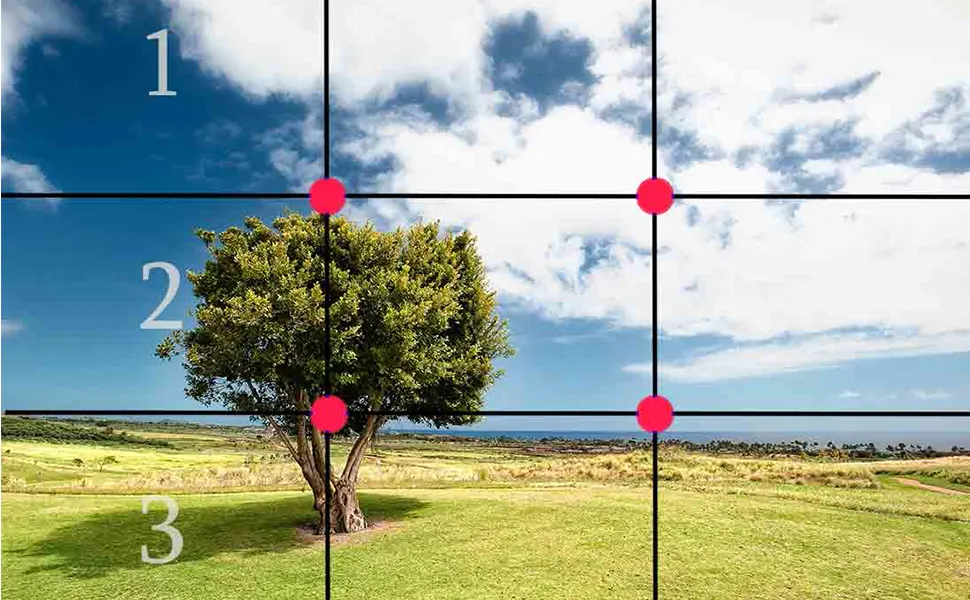
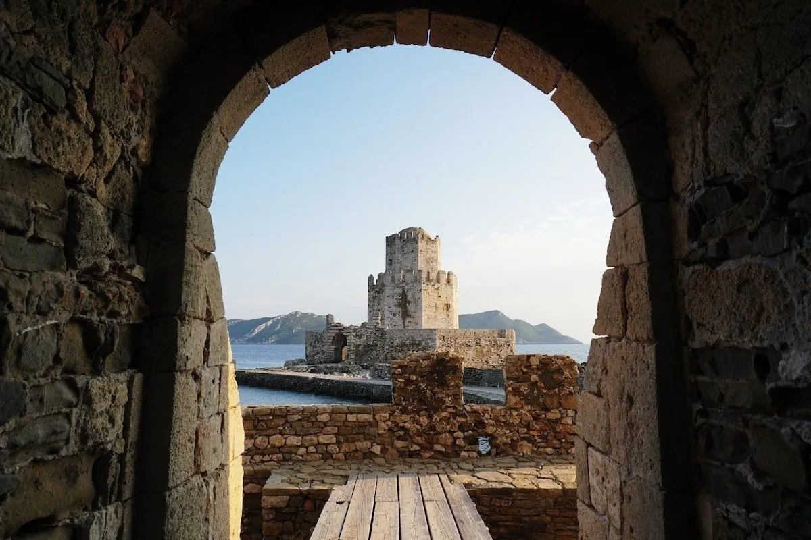
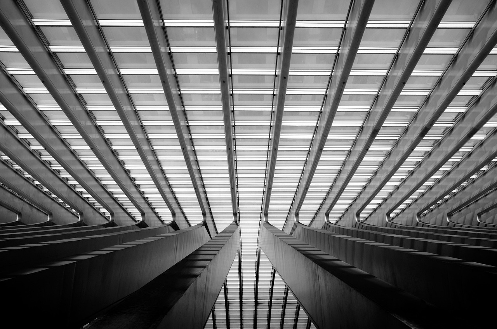

Тайните на добрата композиция
Кликнете върху заглавията, за да научите повече за всяко правило.
1. Правилото на третините

Представете си, че кадърът е разделен на 9 равни части от две хоризонтални и две вертикални линии. Най-важните обекти трябва да се намират върху пресечните точки на тези линии, а не в центъра. Това прави снимката по-балансирана и интересна за окото.
2. Водещи линии

Използвайте естествени линии в средата (пътища, релси, огради, редици от дървета), за да "хванете" погледа на зрителя и да го отведете директно към главния обект в снимката.
3. Рамкиране (Framing)

Използвайте елементи от предния план, за да създадете "естествена рамка" около обекта. Това може да е прозорец, арка, клони на дървета или дори дупка в стена. Рамката добавя дълбочина и фокусира вниманието.
4. Симетрия и Повторение

Човешкото око обича реда. Снимането на перфектно симетрични сгради или повтарящи се мотиви (шарки, плочки, колони) създава усещане за хармония и спокойствие.
5. Дълбочина на кадъра

Фотографията е двуизмерна, но светът е триизмерен. За да създадете усещане за обем, винаги се опитвайте да имате три плана: преден план (нещо много близо), среден план (обекта) и заден план (фон).